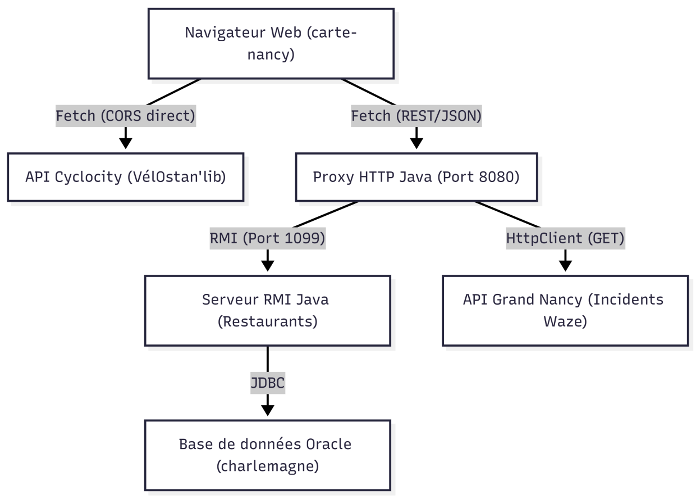

Ce projet s'inscrit dans la SAÉ d'Application Répartie. Il permet de visualiser sur une carte interactive Leaflet des données hétérogènes concernant la ville de Nancy, issues à la fois de données ouvertes publiques et d'une base de données privée via une architecture distribuée (RMI & Proxy HTTP).
Dépôt Git : https://github.com/JassemMT/S4-IL-02-Projet_application_repartie
L'application est composée d'une interface web cliente (TypeScript/Leaflet) qui interroge d'une part les API publiques en direct, et d'autre part un serveur Proxy Java (gérant le CORS). Ce Proxy fait le pont avec un service RMI, qui lui-même communique avec une base de données Oracle.

Schéma de l'architecture distribuée
HttpServer) résolvant le CORS entre le
navigateur et les services RMIgetRestaurants() et
reserverTable(...) via RMIRESTAURANT,
TABLE_RESTAURANT, CRENEAU_TABLE, RESERVATION, PLAT,
COMMANDE, CONTIENTServiceRestaurantImpl) utilisant JDBC pour exposer deux méthodes distantes : la
récupération des restaurants (format JSON), et la réservation d'une table. Les conflits concurrents sont
gérés avec un FOR UPDATE ... WAIT sur la BDD.HttpServer)
permettant de résoudre les problèmes de sécurité du navigateur (CORS). Il expose les services RMI sous
forme d'API REST accessibles par le frontend.L'application est déployée dans l'environnement de l'IUT Nancy-Charlemagne :
| Composant | Hébergement | Détails |
|---|---|---|
| Frontend | Serveur Webetu de l'IUT | https://webetu.iutnc.univ-lorraine.fr/www/e52526u/nancy-carte/ |
| Serveur RMI + Proxy | Machine de l'IUT (en salle) | Lancés manuellement par un membre du groupe |
| Base de données | Serveur Charlemagne | Accès via les identifiants élève d'un membre du groupe |
| Outil | Version minimale |
|---|---|
| Java JDK | 11+ |
| Maven | 3.6+ |
| Node.js | 16+ (pour le frontend) |
| npm | 8+ (pour le frontend) |
| Oracle DB | Accès à une instance Oracle |
Pour lancer l'application complètement, plusieurs terminaux sont nécessaires :
Exécuter les scripts SQL dans l'ordre sur instance Oracle :
À la racine du dossier RMI :
Cela compile les trois modules (service, proxy, client) et produit les
JARs dans leurs répertoires target/ respectifs.
Le serveur RMI doit être lancé en premier car le proxy s'y connecte au démarrage. Depuis le dossier RMI :
Il est possible de surcharger les identifiants de la base de données en ligne de commande :
Fichier RMI/service/src/main/resources/config.properties :
| Propriété | Description | Valeur par défaut |
|---|---|---|
db.url |
URL JDBC de la base Oracle | (à adapter) |
db.user |
Utilisateur Oracle | (à adapter) |
db.password |
Mot de passe Oracle | (à adapter) |
rmi.hostname |
Hostname RMI | 127.0.0.1 |
rmi.port |
Port du registre RMI | 1099 |
rmi.name |
Nom du service dans le registre | serviceRestaurant |
Dans un autre terminal, depuis le dossier RMI :
Fichier RMI/proxy/src/main/resources/config.properties :
| Propriété | Description | Valeur par défaut |
|---|---|---|
rmi.host |
Hôte du serveur RMI | localhost |
rmi.port |
Port du registre RMI | 1099 |
rmi.name |
Nom du service RMI | serviceRestaurant |
http.port |
Port d'écoute HTTP du proxy | 8080 |
incidents.url |
URL de l'API Grand Nancy (incidents) | (URL open data) |
iut.proxy.host |
Proxy réseau IUT (vide si hors IUT) | (vide) |
iut.proxy.port |
Port du proxy IUT (vide si hors IUT) | (vide) |
| Méthode | Route | Description |
|---|---|---|
GET |
/restaurants |
Liste tous les restaurants (JSON) |
POST |
/reserver |
Réserve une table (body JSON) |
GET |
/incidents |
Incidents de circulation Grand Nancy |
Exemple de body pour /reserver :
Pour vérifier le service RMI via le terminal :
Il exécute automatiquement plusieurs scénarios de test (récupération des restaurants, réservation valide, restaurant inexistant, champs manquants, convives invalides).
Dans le dossier carte-nancy, recompiler le TypeScript (si des modifications sont faites) :
Puis déposer le contenu du dossier carte-nancy/ sur Webetu (via SFTP ou le gestionnaire de
fichiers de l'IUT).
URL de production : https://webetu.iutnc.univ-lorraine.fr/www/e52526u/nancy-carte/